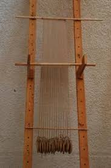

Διαδραστικό Εργαστήριο Υφαντικής
Ημερομηνία: 10 Δεκεμβρίου 2025
Ώρα: 17:00 – 20:00
Τοποθεσία: Εργαστήρι Λαϊκής Τέχνης, Παλιά Πόλη Ρεθύμνου
Το εργαστήριο απευθύνεται σε όσους θέλουν να γνωρίσουν έμπρακτα την τέχνη της υφαντικής. Στον ειδικά διαμορφωμένο χώρο του Εργαστηρίου Λαϊκής Τέχνης υπάρχουν μικροί και μεγάλοι αργαλειοί, δίνοντας τη δυνατότητα στους συμμετέχοντες να εξασκηθούν με πραγματικό εξοπλισμό.
Κατά τη διάρκεια του εργαστηρίου οι συμμετέχοντες θα μάθουν βασικές τεχνικές στησίματος αργαλειού, παραδοσιακές μεθόδους ύφανσης, επιλογή νημάτων και χρωματικών συνδυασμών. Στο τέλος, ο καθένας θα δημιουργήσει ένα μικρό υφαντό αντικείμενο που μπορεί να πάρει μαζί του.
Κόστος συμμετοχής: 8€ (περιλαμβάνονται όλα τα υλικά)
Θέσεις: 20 — Απαιτείται κράτηση
⬅ Επιστροφή στην Αρχική